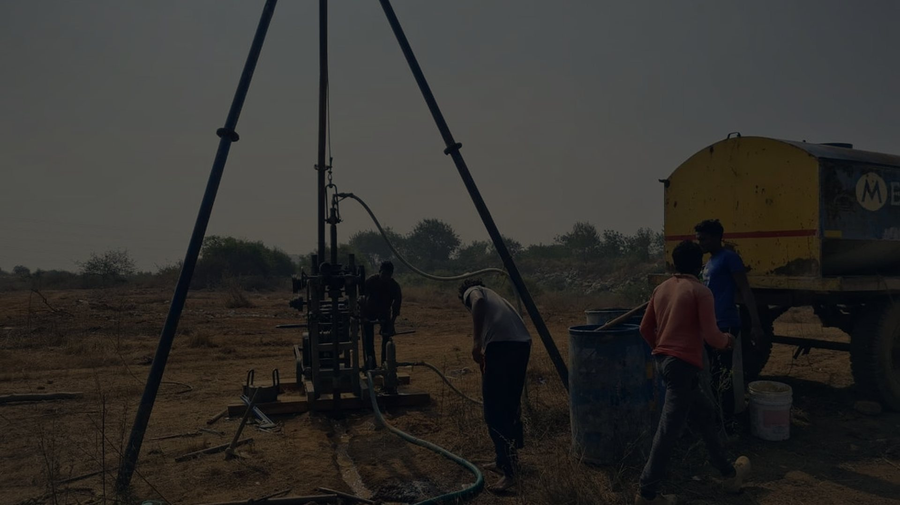

Stage 01 · Surveying & Planning
Before thefirst brick,we readthe land.
Topographic survey · contour mapping · plot boundaries · building setting-out — so design and construction start from the same reliable ground data.
Explore Surveying & Planning
NABL accredited · ISO/IEC 17025:2017 · Hyderabad
From the first survey peg to the final structural audit — field investigation, NABL lab testing and engineering reports under one roof.
Stage 01 · Surveying & Planning
Topographic survey · contour mapping · plot boundaries · building setting-out — so design and construction start from the same reliable ground data.
Explore Surveying & PlanningStage 02 · Geotechnical Investigation
Boreholes, SPT, undisturbed samples and rock cores — turned into a safe bearing capacity report for your foundation design.
Explore Geotechnical InvestigationStage 03 · Structural Design
RCC and steel design to IS 456, IS 875 and IS 1893, with earthquake-resistant detailing and drawings ready for site.
Explore Structural DesignStage 04 · Aggregate & Sand
Gradation, silt content, flakiness, crushing and impact values — so the mix starts with the right sand and stone.
Stage 05 · Water & Chemical Analysis
pH, chlorides, sulphates and solids — checked against IS 456 before the water goes into your concrete.
Explore Water & Chemical AnalysisStage 06 · Steel & Reinforcement
Tensile strength, elongation, bend–rebend and mass per metre on TMT bars to IS 1786.
Stage 07 · Concrete & Cement
Cubes cured and crushed in our NABL-accredited lab, plus mix design and full cement testing.
Explore Concrete & CementStage 08 · Bricks, Blocks & Pavers
Compressive strength, water absorption and efflorescence for clay bricks, fly ash, AAC blocks and pavers.
Explore Bricks, Blocks & PaversStage 09 · NDT & Structural Audit
Rebound hammer, UPV, cores and corrosion checks — strength read in place, without breaking the building.
Explore NDT & Structural AuditStage 10 · Road & Bituminous
Marshall stability, binder content, penetration and field density for roads and pavements.
Explore Road & Bituminous01 / 10 ·
From empty land to a building you can trust